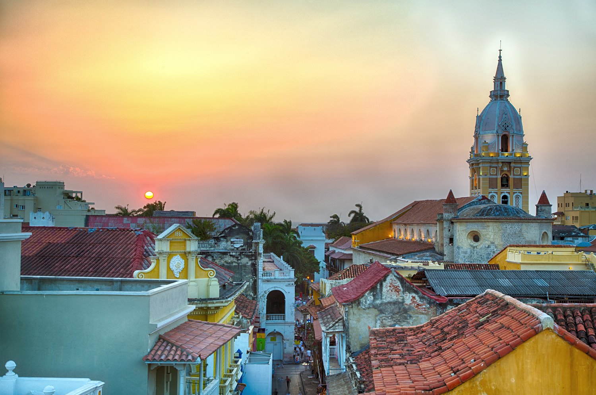

CIUDADES DE COLOMBIA

Colombia es un país que se caracteriza no solo por su diversidad natural, sino también por sus recursos naturales, geografía,
multiculturalidad y multirracialidad.
En Bogotá, su capital a gran altura, el distrito Zona Rosa es famoso por sus restaurantes y tiendas. Cartagena,
en la costa del Caribe, tiene una Ciudad Antigua colonial amurallada, un castillo del siglo XVI y arrecifes de coral cercanos.
Este país es el resultado de la unión de culturas en la época de la conquista, por lo que las tradiciones en las
regiones se encuentran representadas en los muchos dialectos, bailes, colores, sonidos y sabores.
¿Has viajado alguna vez a Colombia? ¡Pues deberías hacerlo por muchos motivos! En los últimos años Colombia
se ha convertido en uno de los destinos favoritos de la región para viajar.
Cada año turistas de todas partes del mundo arriban al país con la intención de disfutar de sus innumerables
atractivos turísticos, de su cultura, sus paisajes y su gastronomía. Y aunque sabemos que las posibilidades
para ver y hacer en Colombia son muchísimas, Por un lado, estamos hablando
de uno de los países más biodiversos del mundo.
Incluso, entre junio y noviembre podrás contemplar a las ballenas jorobadas y a las tortugas marinas,
que pasan por aquí para reproducirse. Por otro lado, debes saber que, aunque aquí no hay estaciones, el clima y
las temperaturas son igual de diversos que sus paisajes.
De hecho, podrás encontrar bosques naturales, sabanas, desiertos, humedales, picos nevados… Por supuesto,
también ofrece una gran variedad de playas, algunas de ellas de lo más sorprendentes.
Otra característica de Colombia que queremos destacar es su riqueza gastronómica, pudiendo encontrar
desde comida marina en la parte del Caribe y del Pacífico, hasta exquisitas sopas y cremas en el centro del país.
Y eso por no hablar de su gran variedad de frutas y del café.
Hablaré sus principales ciudades, basándome en el número de habitantes.